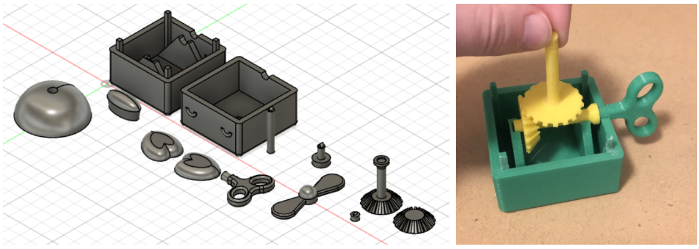

pinwheel-pip.stl
Pinwheel Pip is a silly desktop fidget toy. The 3D model was made in Autodesk Fusion 360, and the components were all 3D printed with PLA plastic.

Pinwheel Pip is meant to help those who have trouble focusing, or just love having little fidget toys on their desk. In its early stages, the product was a small windmill with a turnkey, which eventually morphed into a duck. This change made the product more whimsical and visually appealing. It draws inspiration from old school toys, which require winding up, as well as schoolboy clothing, involving a bowtie and propeller hat.
The toy is simple to use. There is a large turnkey on the back of the duck, and if you rotate it, it will spin the propeller on top of the duck's hat. It can be rotated in either direction or at any speed, so it provides satisfactory mental stimulation.
